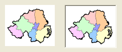

ImageGadget()
Syntax
Result = ImageGadget(#Gadget, x, y, Width, Height, ImageID [, Flags])Description
Creates an Image gadget in the current GadgetList.
Parameters
#Gadget A number to identify the new gadget. #PB_Any can be used to auto-generate this number. x, y, Width, Height The position and dimensions of the new gadget.
The gadget adjusts its width and height to fit the displayed image. The specified width and height are only used when no image is displayed.ImageID The image to display. Use the ImageID() function to get the ID from an image. If this parameter is 0, then no image will be displayed. Flags (optional) Flags to modify the gadget behavior. It can be a combination of the following values: #PB_Image_Border: display a sunken border around the image. #PB_Image_Raised: display a raised border around the image.
Return value
Returns nonzero on success and zero on failure. If #PB_Any was used as the #Gadget parameter then the return-value is the auto-generated gadget number on success.
Remarks
A 'mini help' can be added to this gadget using GadgetToolTip().
- SetGadgetState(): Change the current Image of the gadget. A valid ImageID can be easily obtained with the ImageID() function. If the ImageID is 0, then the image is removed from the gadget.
The following events are supported through EventType():#PB_EventType_LeftClick #PB_EventType_RightClick #PB_EventType_LeftDoubleClick #PB_EventType_RightDoubleClick #PB_EventType_DragStartAfter a #PB_EventType_DragStart event, the Drag & Drop library can be used to start a Drag & Drop operation.
If the support of more event types or double-buffering for regularly updated image contents is needed, then take a look at the CanvasGadget().
Example
If OpenWindow(0, 0, 0, 245, 105, "ImageGadget", #PB_Window_SystemMenu | #PB_Window_ScreenCentered) If LoadImage(0, "map.bmp") ; change 2nd parameter to the path/filename of your image ImageGadget(0, 10, 10, 100, 83, ImageID(0)) ; imagegadget standard ImageGadget(1, 130, 10, 100, 83, ImageID(0), #PB_Image_Border) ; imagegadget with border EndIf Repeat : Until WaitWindowEvent() = #PB_Event_CloseWindow EndIf

See Also
GetGadgetState(), SetGadgetState(), ButtonImageGadget(), ImageID(), CanvasGadget()
Supported OS
All